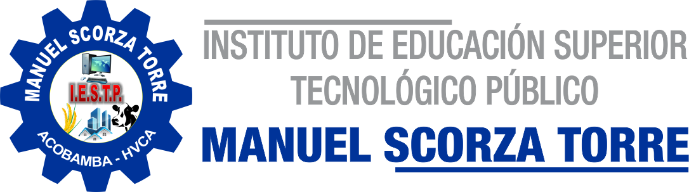

Saltar al contenido
Educación superior tecnológica pública
Acobamba, Huancavelica

Acobamba · Huancavelica
Administrador ↗
Inicio
Presentar documento
Consultar trámite
Bandeja de expedientes
El instituto
Mesa de partes digital
Cargando los servicios del Instituto Manuel Scorza Torre…
Activa JavaScript para registrar y consultar expedientes.